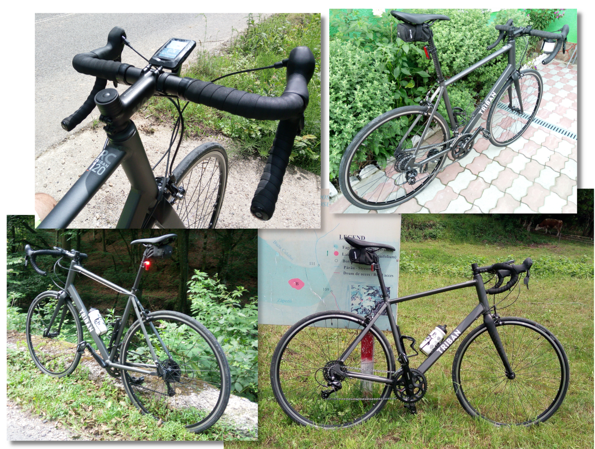
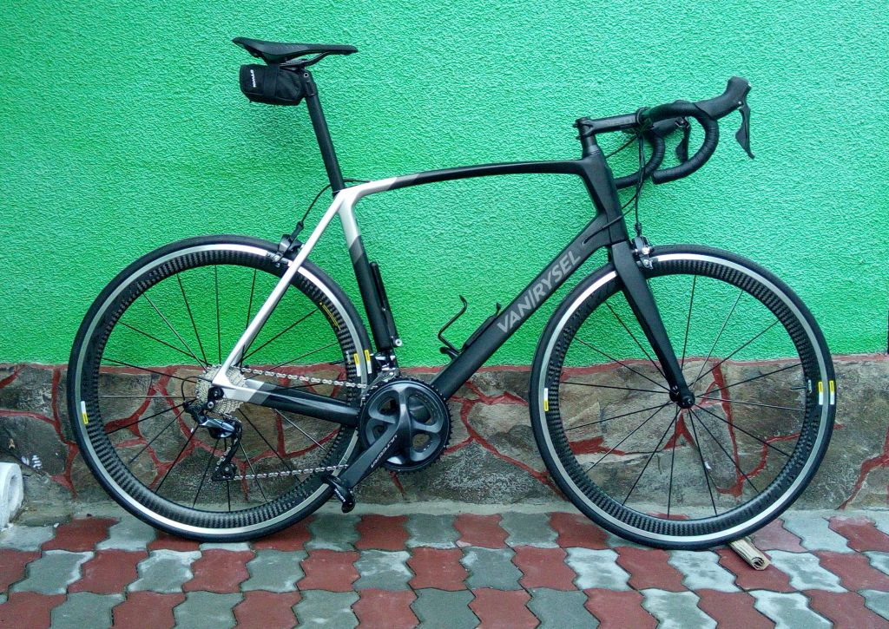

And the passion goes on...
The 10th of May 2021 was my last ride with TRIBAN RC120. It was my nameless bike, just a manufacturer code, but it was a bike that has its style, its story that carry on.
Riding the TRIBAN RC120 was a good reason to free myself, not racing, but enjoying the moments. I pedaled 6987km, on 216 rides with that bike and I don't regret a thing.

But Triban RC120 was an entry level bike, aluminium frame, aluminium wheels, heavy, with some shifting problems and I've decided to move to the next level of cycling for me.
Ultra CF
The old Triban RC120 was replaced by VAN RYSEL ULTRA CF ULTEGRA
A new style and new type of bike, full carbon, MAVIC cosmic carbon wheels, fizik: saddle, Shimano Ultegra R8000 52/36 transmission, Shimano Ultegra R8000 11/28 cassette, no disk brakes ( I still prefer the rim brakes), cables inside the frame, a very light bike.

This is a massive upgrade, more than I've expected. The bike is very light, but it feels solid and compact. I have really noticed a huge reduction of vibrations in my arms. Braking power is fantastic and I am not regretting not buying a discs bike. Still, a few adjustments need to take care of.
Amazing bike with a real premium feeling.
I love cycling and I love to ride my ULTRA bike...